Step-by-step guides for everything in Freally File Manager.
Install Freally File Manager
Choose your platform's recommended installer from the table below.
Run the one-liner in a terminal, or download the installer from the
Releases page.
Windows only — SmartScreen warning: the first time you launch, Windows
may show a "Windows protected your PC" dialog. Click More info → Run anyway.
This clears after roughly 100 downloads as Microsoft builds reputation for the binary.
macOS only — Gatekeeper: double-clicking the app the first time will be
refused. Instead right-click → Open → Open to whitelist the bundle.
If you installed via Homebrew (brew install --cask freally), the quarantine
flag is cleared automatically — no extra step needed.
Linux — AppImage: after downloading, mark the file executable with
chmod +x freally-*.AppImage then run it. On SELinux-enforcing systems
this step is required before the file will launch.
Launch Freally File Manager. The main window opens at 1120 × 640 by default (minimum 960 × 420).
See screenshotHide screenshot
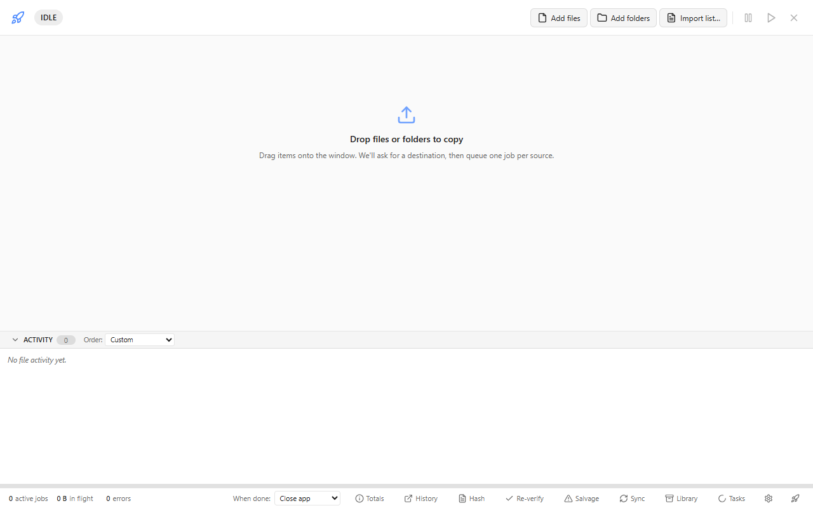
The window you get on first launch. The toolbar across the top is where files come in; the footer along the bottom is where History, Library and Settings live.
On the very first launch you may also see a one-time prompt offering the phone
companion. Maybe later dismisses it for good; you can pair a phone
at any time from Settings → Mobile.
See screenshotHide screenshot
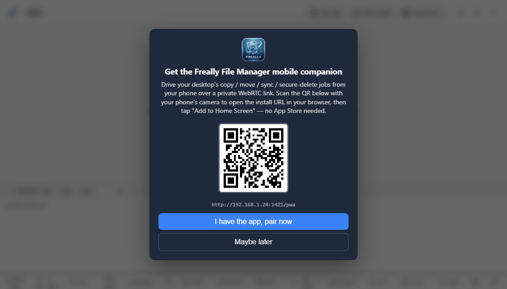
The one-time pairing prompt. Scanning the QR opens the install page on the phone; dismissing it does not turn anything off.See screenshotHide screenshot
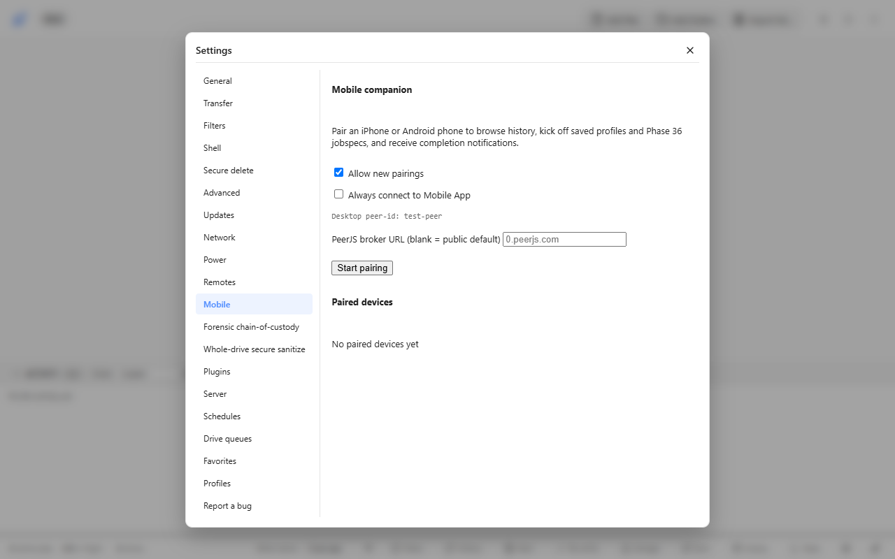
Settings → Mobile is where pairing lives afterwards, along with the push-notification settings.
Platform
Channel
Command
Windows
winget
winget install Freally.Freally
macOS
Homebrew
brew tap freally/freally && brew install --cask freally
Ubuntu / Debian
deb
sudo apt install ./freally-ui_<ver>_amd64.deb
Fedora / openSUSE
rpm
sudo dnf install ./freally-ui-<ver>.x86_64.rpm
Arch Linux
AUR
yay -S freally-bin
Any Linux
AppImage
Download from Releases, then chmod +x
Any Linux
Flatpak
flatpak install flathub com.freally.filemanager
Copy files
Launch Freally File Manager.
Add your source files — drag and drop one or more files or folders
onto the window, or click Add files / Add folders
in the header toolbar.
See screenshotHide screenshot
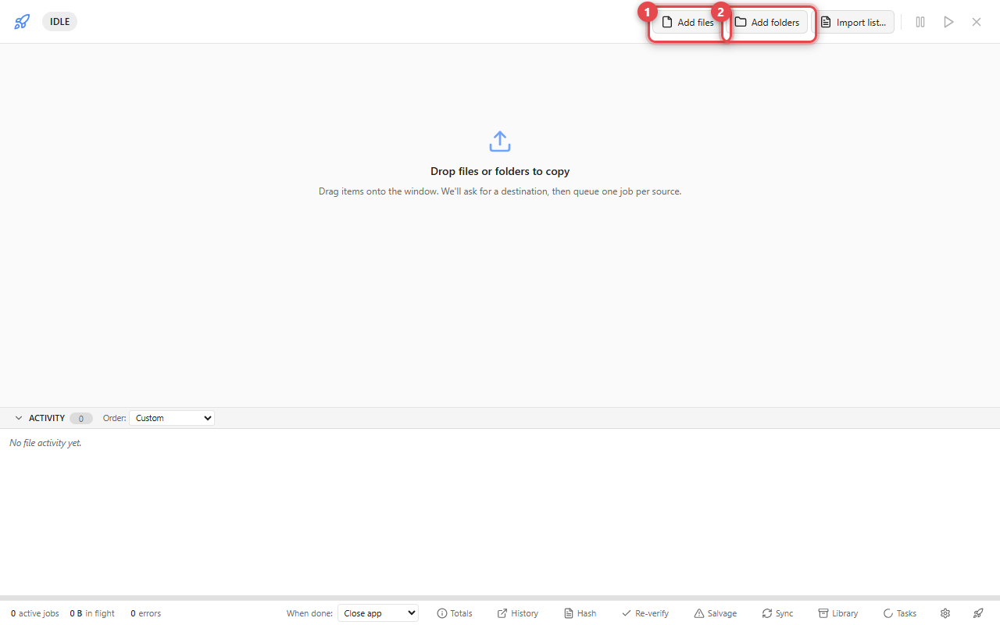
Both entry points sit in the header toolbar. Dragging files onto the window does the same thing.
The drop-staging dialog opens. Set:
Destination — choose the target folder via the native file picker.
See screenshotHide screenshot
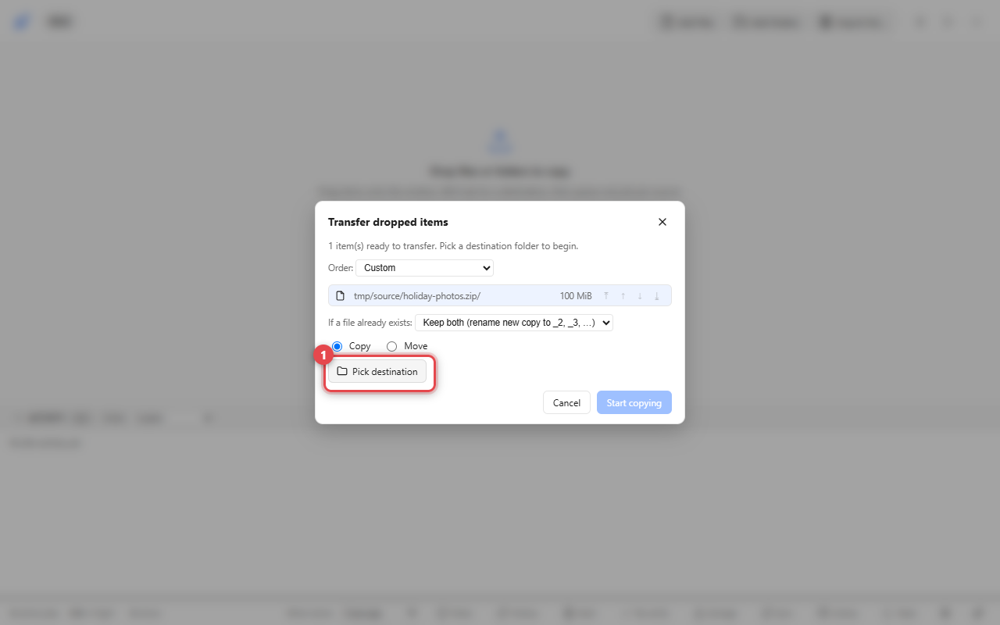
The staging dialog opens as soon as files arrive. Pick the destination first — the start button stays disabled until there is one.
Operation — select Copy (this is the default).
Collision policy — what to do if a file already exists at the destination:
Keep both, Skip, Overwrite, Overwrite if newer, or Ask every time.
Order — rearrange the source list by name or size, or drag rows manually.
Files are always grouped before folders.
Click Start copying.
See screenshotHide screenshot
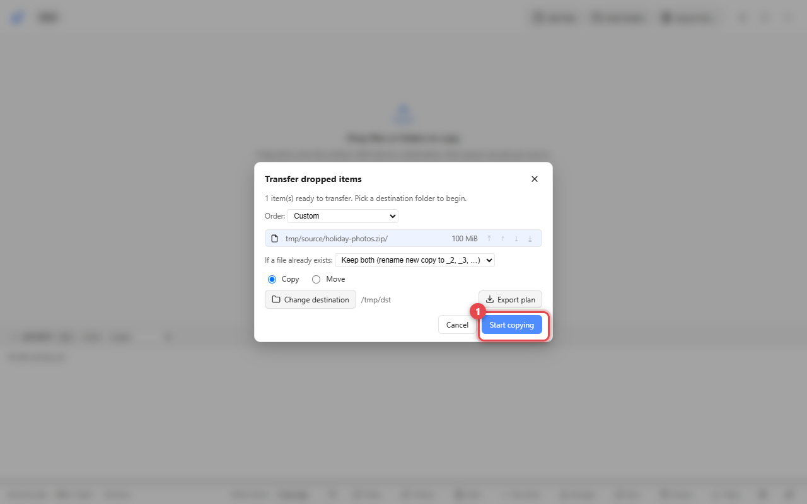
With a destination set, Start copying is enabled.
Watch progress in the queue view — each file gets its own row showing a circular progress
ring, live speed (MiB/s), bytes copied vs. total, and an ETA. The header strip shows
aggregate speed and overall ETA across all running jobs.
See screenshotHide screenshot
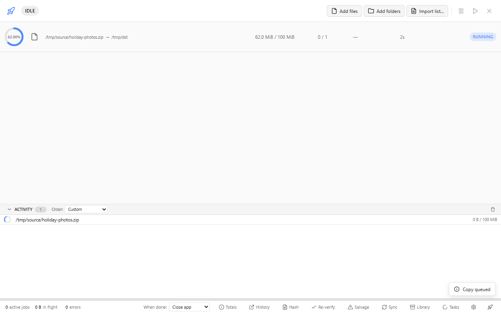
One row per job, each with its own ring, speed and ETA. The header strip aggregates across everything running.
To pause a job, press Space with that row focused, or use
the right-click context menu. Click Resume (or press Space
again) to continue.
When all jobs finish, the state pill shows Idle and the completed rows
show the Done badge. A verified copy also confirms byte-exact integrity
(see Verify a transfer).
Move files
Launch Freally File Manager.
Drag and drop files or folders onto the window, or use Add files /
Add folders in the toolbar.
In the drop-staging dialog, set Operation → Move.
See screenshotHide screenshot
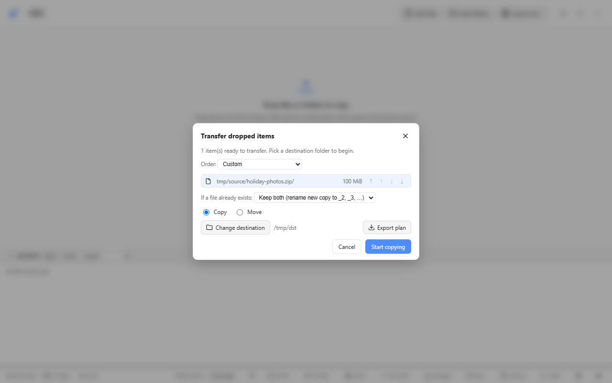
Operation and collision policy are both set here, before the transfer starts.
Choose your Destination folder and set a Collision policy.
Click Start moving.
Freally File Manager copies each file to the destination first, then deletes the source only after
the destination write succeeds. If a failure occurs mid-move, the source file is
preserved and the row is marked Failed — no data is lost.
Completed rows show the Done badge. Check the History tab
to confirm all files transferred successfully.
You can also trigger a move from Windows Explorer, macOS Finder, or your Linux file manager
using the right-click "Move with Freally File Manager" entry — see
Shell & right-click menu.
Securely delete files
From your file manager (Windows / macOS / Linux): right-click the file
or folder and choose Secure delete with Freally File Manager.
From inside the app: right-click any completed job row in the queue
and choose Secure delete source.
A confirmation dialog shows the file path(s) and the currently configured shred method.
To change the shred method for this deletion, click the method name to open the picker.
For the default method across all future deletions, go to
Settings → Secure delete.
Click Shred (you may be asked to confirm a second time if
Require double confirmation is enabled in Settings).
Freally File Manager overwrites the file data according to the chosen method, then deletes it.
The row shows Done when shredding is complete.
See screenshotHide screenshot
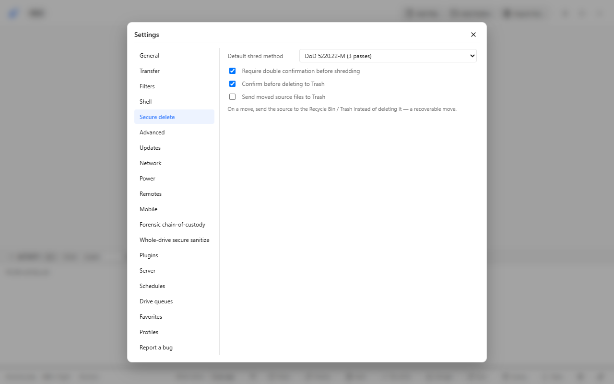
Settings → Secure delete sets the default method for every future deletion, and whether a second confirmation is required.
Method
Passes
When to use
Zero
1
Quick disposal of non-sensitive data
Random (CSPRNG)
1
Fast cryptographically random overwrite
DoD 5220.22-M
3
Standard compliance requirement
DoD 7-pass (ECE)
7
Higher-assurance compliance
Schneier
7
Practical strong deletion
VSITR (German BSI)
7
European regulatory environments
Gutmann
35
Historical; rarely needed on modern drives
NIST 800-88 Clear
1
Modern magnetic-media standard
SSD warning: multi-pass overwrite does not reliably sanitize flash
storage due to wear-leveling and over-provisioning. Freally File Manager detects SSDs and shows an
advisory toast. For true SSD sanitization, use ATA SECURE ERASE via your drive vendor's
tool, or rely on full-disk encryption with key rotation.
See screenshotHide screenshot
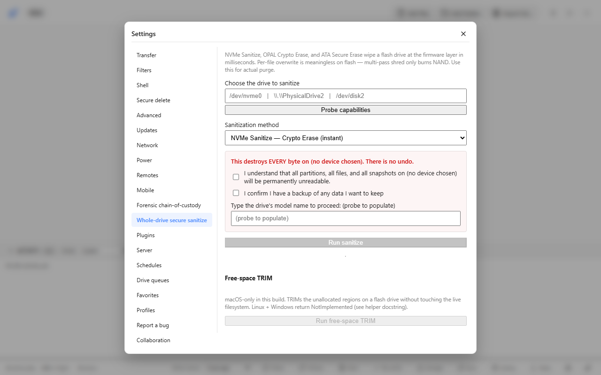
Whole-drive sanitize is a separate pane from per-file shredding — this is the one that reaches flash storage.
Organize & batch operations
Add multiple files and folders to Freally File Manager in a single drag — or click
Add files / Add folders multiple times to build up a
larger source list.
In the drop-staging dialog, use Order to sort the source list by name
or size (ascending or descending), or drag rows manually to prioritize. Files always
appear before folders regardless of sort order.
To skip certain files, open Settings → Filters before starting. Add
include or exclude globs (e.g., **/*.log to exclude all log files, or
**/*.txt to include only text files). You can also set size bounds or
modification-time bounds to filter by age or file size.
See screenshotHide screenshot
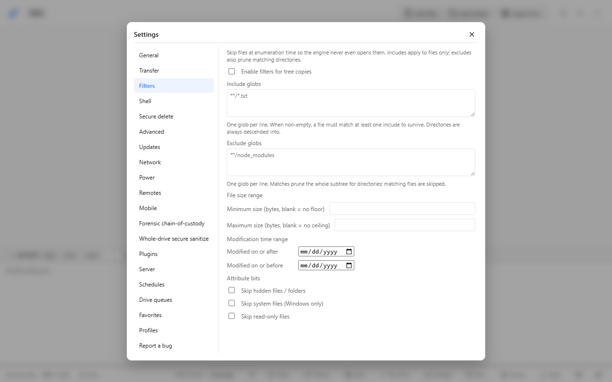
Filters apply to the whole job, so set them before starting rather than part-way through.
Choose your Collision policy in the staging dialog — Skip
is useful for batch syncs where you want to add only new files; Overwrite if newer
handles incremental updates.
Click Start copying or Start moving.
The Activity panel (lower half of the main window) shows one row per file
the engine touches as it enumerates the source tree. Rows display status badges:
Pending, Running, Done, Skipped, or Failed.
On trees over 250,000 files the panel stops adding rows to stay responsive, but the
queue progress bar continues counting all files.
Use the When done selector (top-right of the Activity panel) to
automatically close the app, log off, shut down, or sleep the machine when the entire
queue finishes.
See screenshotHide screenshotThe When done selector is at the top right of the activity panel.
To re-run a batch later, go to the History tab, find the job, and click
Re-run — it queues the same sources and destination with one click.
Verify a transfer
Open Settings → Transfer and find the Verify drop-down.
See screenshotHide screenshot
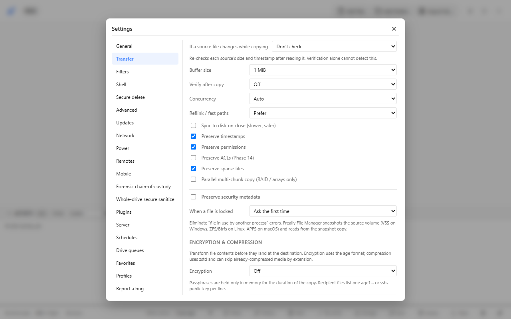
Verify after copy is on the Transfer pane. The choice applies to the next job you start.
Choose a verification algorithm. Recommended choices:
xxHash3 — fastest option, ideal for day-to-day copies.
BLAKE3 — cryptographically strong and still very fast; use for
important data.
SHA-256 — maximum compatibility with external tools and
TeraCopy-format sidecar files.
Close Settings. The next copy job will automatically verify.
During a copy, Freally File Manager hashes the source during the read pass — no second
read of the source needed. After all bytes land at the destination, a dedicated post-pass
hashes the destination file.
If the hashes match, the row badge shows Done. If they differ, the row shows
Failed with a VerifyFailed error — click the row to open the details
drawer with the expected vs. actual hash values.
To export a hash sidecar (TeraCopy-compatible format), click the export icon in the
queue header or right-click a completed row and choose Export checksums.
Each line is <hex> <relative path>.
If a copy appears to stall at 100%, check the state pill in the header. If it reads
Verifying, the post-copy hash pass is still running — this is normal
for large files or slower algorithms like SHA-256.
Shell integration & right-click menu
Shell integration is installed automatically alongside the app on all platforms —
no separate step is needed.
Windows: in File Explorer, right-click any file or folder. You will see
Copy with Freally File Manager and Move with Freally File Manager in the
context menu. These entries are provided by an IExplorerCommand shell
extension registered during install.
macOS: in Finder, right-click (or Control-click) a file or folder and
look under Quick Actions or Services for
Copy with Freally File Manager. The integration uses a Finder Sync extension plus
a macOS Services menu entry visible from any app that supports NSServices.
Linux (GNOME): right-click in Nautilus. The Freally File Manager actions appear
via a Nautilus Python extension installed to your user extensions folder.
Linux (KDE): right-click in Dolphin. The actions appear via a KDE
ServiceMenu (.desktop file) placed in the KDE services directory during install.
Linux (XFCE / Thunar): right-click in Thunar. The actions appear via
a Thunar Custom Action registered at install time.
Selecting any of these actions passes the selected paths to the running Freally File Manager instance
(or launches it first if it isn't already open) and immediately opens the
drop-staging dialog with those paths pre-filled.
To enable or disable the shell entries, or to opt in to intercepting the default
Windows copy handler, go to Settings → Shell.
See screenshotHide screenshot
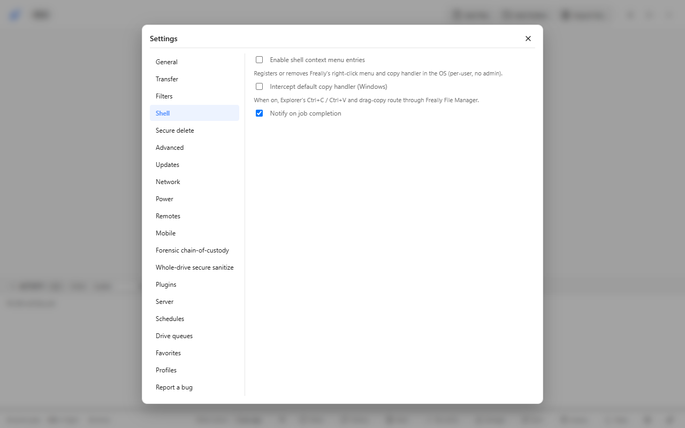
Settings → Shell is where the right-click entries are turned on and off.
The global paste hotkey
In your file manager (Explorer, Finder, Files, Nautilus, Dolphin, etc.), copy one or
more files normally — Ctrl+C on Windows/Linux or Cmd+C on macOS.
Switch to any other app or stay where you are — you don't need to go back to Freally File Manager.
Press Ctrl + Shift + V (Windows / Linux) or
Cmd + Shift + V (macOS) anywhere on your system.
Freally File Manager reads the file paths from the OS clipboard and opens the
drop-staging dialog with those sources already filled in.
Choose a destination, confirm the operation, and click Start copying
or Start moving.
To change the hotkey combo, go to Settings → General →
Global paste shortcut and enter a new combination. To
disable the hotkey entirely, toggle it off in the same setting.
See screenshotHide screenshot
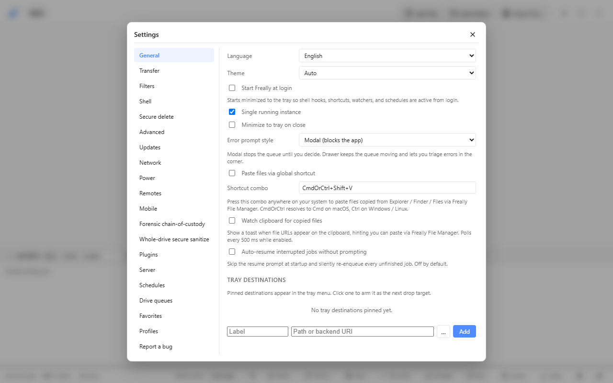
The shortcut and the clipboard watcher are both on the General pane.
The optional Clipboard watcher (Settings → General → Watch clipboard
for copied files) polls every 500 ms and shows a small toast notification when file
paths appear on the clipboard — handy as a reminder to use the hotkey. Disable it if
you prefer a quiet clipboard.
History & totals
Click the History link in the app footer to open the History tab.
See screenshotHide screenshot
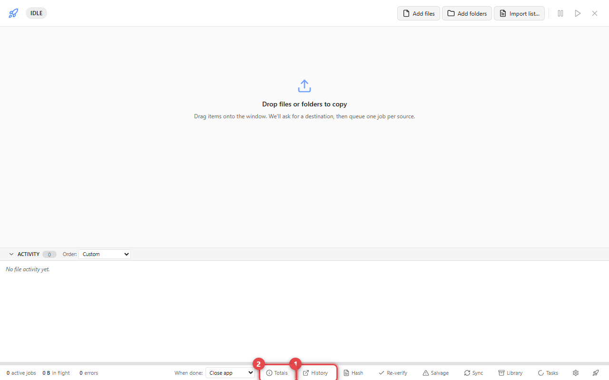
History and Totals sit next to each other in the footer.
Every completed or failed job is listed with columns for: Date, Kind (Copy / Move /
Secure delete), Source, Destination, Files transferred, Total size, Status, and Duration.
Filter the list using the controls at the top: filter by date range,
job kind, status, or a text search across paths.
To re-run any past job, click the row to select it, then click
Re-run — Freally File Manager queues the same source paths and destination
immediately, no dialog needed.
To export the filtered list as a CSV, click Export CSV.
The file follows RFC 4180 format (double-quoted fields, embedded-quote doubling,
newline-safe).
Click the Totals tab (also in the footer) to see lifetime aggregate
statistics: total bytes copied, total files, total jobs, and average throughput. A
30-day activity sparkline and a breakdown by job kind are shown below the headline numbers.
To clear all history and statistics, go to Totals → Reset
statistics. This is a two-step action — you must confirm twice to prevent
accidental deletion.
To limit how long history is retained, go to Settings → Advanced → History
retention days and enter a number of days. Leave it blank to keep history
forever.
Library — your snapshot timeline
The Library drawer is a unified view of Freally File Manager's content-addressed
repository: every copy, sync, and version checkpoint is stored once (deduplicated into
content-defined chunks) and surfaced on a single timeline.
Click the Library link in the app footer to open the drawer.
See screenshotHide screenshot
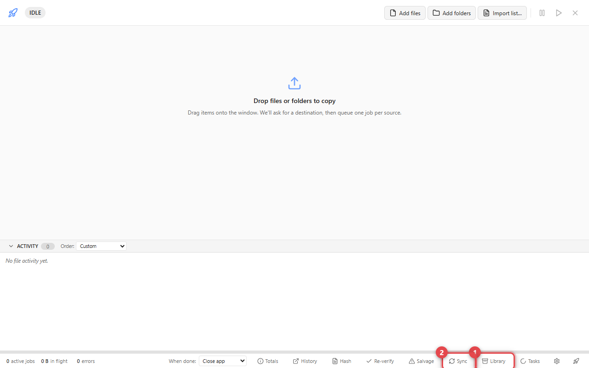
Library and Sync are further along the same footer strip.
The header shows a dedup “hero” number — how much is
physically stored on disk versus the effective (logical) size, and the percentage saved
by deduplication.
Switch between four sub-views:
Live — the repository at a glance: bytes stored, distinct
chunks, snapshot count, plus a Reclaim space button that runs
garbage collection to drop chunks no snapshot still references.
Snapshots — the unified timeline of every recorded snapshot
(copy / sync / version / backup), newest first. Each row offers
Restore… (browse the snapshot's files, pick a destination, and
restore — with an overwrite / skip / keep-both choice when a file already exists)
and Forget (drop the snapshot from the timeline; run Reclaim space to
free its bytes).
Sources — designate folders for backup, then
Back up now to capture an on-demand snapshot (honouring exclude globs).
Repeat backups of an unchanged tree are nearly free — identical chunks are stored
once.
Versions — per-file rolling versions: enter a destination
path to list its captured versions.
The existing History, Sync, and Totals
drawers remain available — the Library is additive.
Share files with people
Files you share are encrypted so that only the people on your list can open them.
Each person keeps their own key — there is no shared password to pass around
or to leak.
Open Settings → Collaboration.
See screenshotHide screenshot
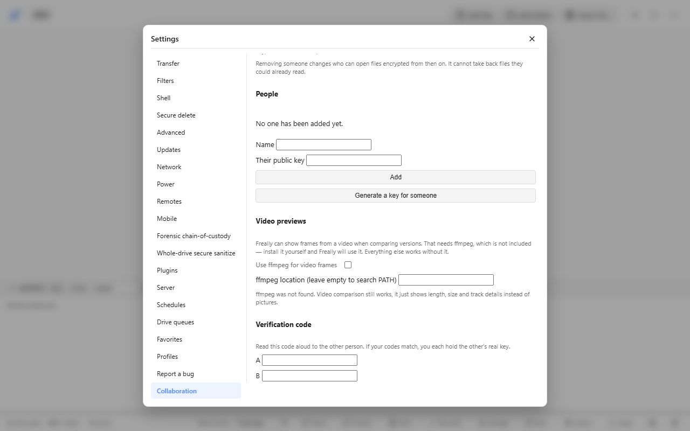
Collaborators and the optional ffmpeg integration are both on this pane.
Add each person with a name and their public key. If they do not
have one yet, Generate a key for someone creates a pair; the secret
half is shown once and is the only way to open shared files, so they must
copy it straight away.
Check the verification code. After adding someone, both of you see a
short code. Read it aloud to each other — over the phone, in person, any channel
an attacker does not control. If the codes match, you each hold the other's real key.
This step is what stops someone from slipping a substitute key into the list.
To stop sharing with someone, use Remove. The removal is signed with
a key only this installation holds, so it cannot be forged by a program that edits
the list behind your back.
Removing someone is forward-only, and this matters. It changes who can
open files encrypted from that point on. It cannot take back files they could
already read — those bytes were already in their hands, and no software can reach
into someone else's computer and un-read them. If a departing collaborator had access to
something sensitive, treat it as disclosed and rotate the secret itself.
The list of people is not secret. It holds names and public keys, which reveals who you
work with even though it reveals nothing they can decrypt.
Compare & merge files that are not text
When two versions of a document differ, a text editor can show you three columns of
lines. A photo, a Photoshop file, a song, a video or a PDF has no such view, so
Freally File Manager shows you a comparison built for each kind of file.
Images — the two pictures blended together, plus a heat map
highlighting exactly which pixels changed and by how much.
Photoshop files — a layer-by-layer list showing which layers
were added, removed, or edited.
Audio — the waveform of each version side by side, so a
re-record, a trim, or a level change is visible at a glance.
Video — length, track list, dimensions and a timeline of the
clip's structure. A re-encode or a trim shows up clearly.
PDF — page count and per-page size, so an inserted or removed
page is obvious.
Video and PDF show structure, not pictures. Reading actual video frames
or rendering a PDF page needs large extra components that Freally File Manager does not
bundle. For video you can turn on ffmpeg in
Settings → Collaboration if you already have it installed, and the
comparison gains a real strip of thumbnails across the clip. Without it, the structural
comparison still works and tells you so rather than pretending otherwise.
When you want to resolve the difference yourself, Hand off to an editor
writes all three versions — the common ancestor, your copy, and theirs — out
as files, so you can open them in whatever program actually edits that format.
Run Freally File Manager as a server
Freally File Manager can run as a headless file server that exposes a folder over the network —
via WebDAV, plain HTTP, an S3-compatible
API, or SFTP — with optional authentication and a Prometheus
/metrics endpoint. You can drive it two ways: the
Settings → Server panel in the app, or the freally serve
command for headless machines and scripts.
From the app (Settings → Server)
Click the gear icon in the footer to open Settings, then select the
Server tab.
See screenshotHide screenshot
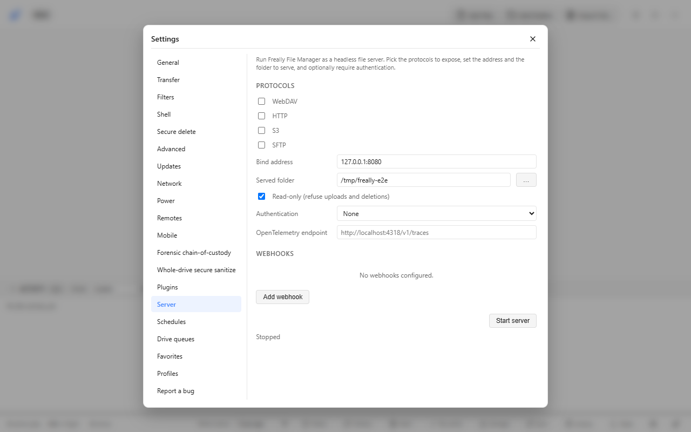
Everything the server needs is on one pane, including the read-only switch and the authentication mode.
Under Protocols, tick the access methods to expose:
WebDAV, HTTP, S3, or
SFTP. WebDAV and HTTP can be enabled together; S3 and SFTP each need a
server of their own (see the note below).
Set the Bind address. The default 127.0.0.1:8080 serves
only to this computer. To reach the server from other machines, use
0.0.0.0:8080 (or your LAN IP) and open that port in your firewall.
Set the Served folder — type a path or click … to pick
one. Leaving it blank serves the app's working directory.
Optionally tick Read-only to refuse all uploads and deletions — clients
can browse and download, but never change anything on disk.
Choose an Authentication mode — None, Bearer token, or
Basic (username + password) — and fill in the credential fields that appear.
Click Start server. The status line shows
Running on <address>, and when WebDAV or HTTP is enabled a
Metrics URL appears (a Prometheus /metrics endpoint). Click
Stop server to shut it down — the server also stops when you quit Freally File Manager.
Protocol
Best for
Connect with
WebDAV
Mounting the folder as a network drive
Windows "Map network drive", macOS Finder → Connect to Server (Cmd+K), GNOME Files, or davfs2
HTTP
Simple file download / upload (GET / PUT)
A web browser, curl, or wget
S3
S3-compatible object access
aws CLI, rclone, or any S3 SDK — use Basic auth, where the username / password are the access-key-id / secret (AWS SigV4)
SFTP
File transfer over SSH
sftp, scp, FileZilla, WinSCP, or rclone
Protocol combinations: WebDAV and HTTP share one address and can be on at
the same time. S3 and SFTP each use their own transport, so enable only one of them at a
time on its own server — Freally File Manager refuses to start if you combine S3 or SFTP with another
protocol on the same address. S3 also requires Basic or None auth (not
Bearer), because it signs requests with AWS SigV4.
Security: a server bound to anything other than 127.0.0.1 with
authentication set to None is reachable — read/write unless Read-only — by
every device that can reach the address, and Freally File Manager logs a loud warning. For anything
beyond your own machine, set Bearer or Basic auth, or put the server
behind a reverse proxy that handles authentication.
From the command line
Freally File Manager also ships a command-line binary, freally, for running a server on a
headless machine or from a script. The flags mirror the panel:
Open a terminal and run, for example:
freally serve --webdav --root /data --bind 0.0.0.0:8080 --token s3cr3t
With no protocol flag it serves WebDAV; with no --bind it
listens on 127.0.0.1:8080.
The terminal prints the bound address and the /metrics URL. Press
Ctrl-C to stop the server.
Flag
Effect
--webdav / --http / --s3 / --sftp
Choose the protocol(s) to expose. Defaults to --webdav.
--bind <addr>
Address to listen on (default 127.0.0.1:8080; use 0.0.0.0:<port> to expose on the network).
--root <path>
Folder to serve (default: the current directory).
--readonly
Refuse uploads and deletions.
--token <token>
Require this bearer token on every request.
--user <name> --password <pw>
Require HTTP Basic credentials (also the S3 access-key-id / secret).
--otel-endpoint <url>
Export traces to an OpenTelemetry OTLP/HTTP collector, e.g. http://localhost:4318/v1/traces.
The Settings → Server panel also stores an OpenTelemetry endpoint and
webhook destinations (Slack, Discord, ntfy.sh, Pushover) alongside the rest
of your settings. OpenTelemetry trace export is activated when you launch the server from the
command line with --otel-endpoint.
Migrate from another backup tool
Freally File Manager's repository format is CDR-0 (Common Dedup Repository v0), an
open, public-domain specification so any compliant tool can read any compliant repository.
The freally migrate command imports another tool's repository into a CDR-0 repo.
restic, Borg, and Kopia repositories
are all supported. Freally File Manager decrypts the source, reconstructs every file, and re-ingests
it into a fresh CDR-0 repository — deduplicated with Freally File Manager's own chunking:
Updates — auto-check on launch, a Check for updates now button
that reports the newest release along with its notes, and skip-this-version. The
stable / beta channel selector has no effect in 1.0.0 — one release manifest serves
every platform.
See screenshotHide screenshot
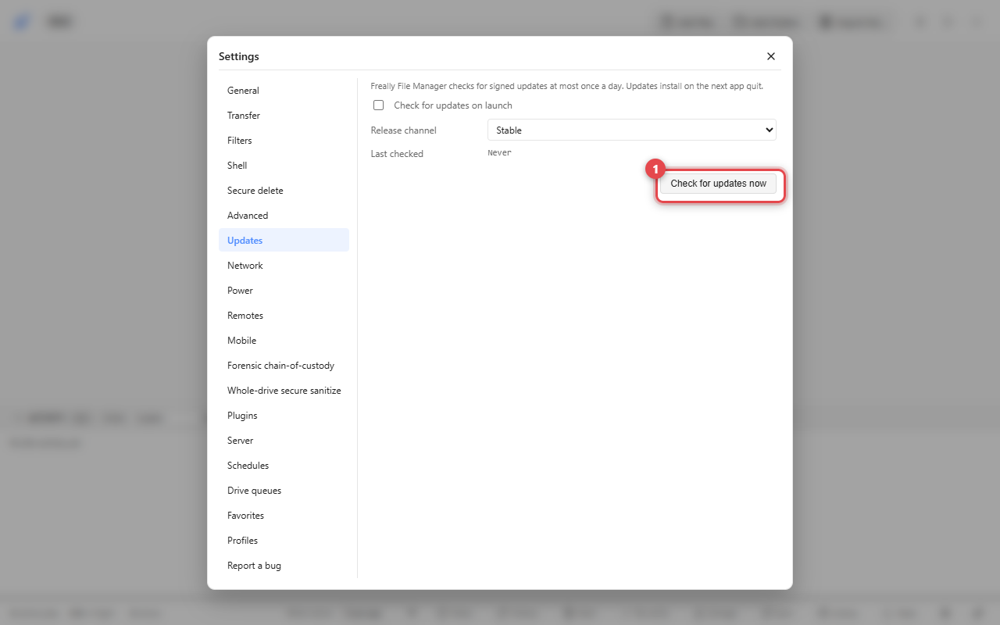
Check for updates now reports the newest release and its notes without installing anything.
Profiles — save the current settings as a named profile, load a
saved profile, or import/export profiles as JSON files for sharing across machines.
See screenshotHide screenshot
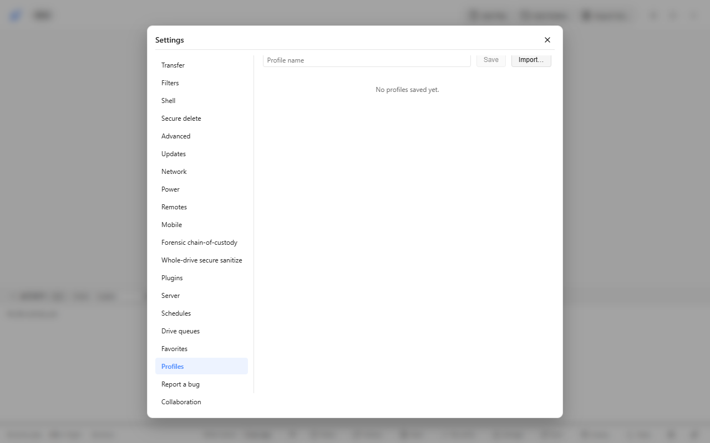
Profiles save the whole settings set under a name, and export as JSON so another machine can load the same one.
See screenshotHide screenshot
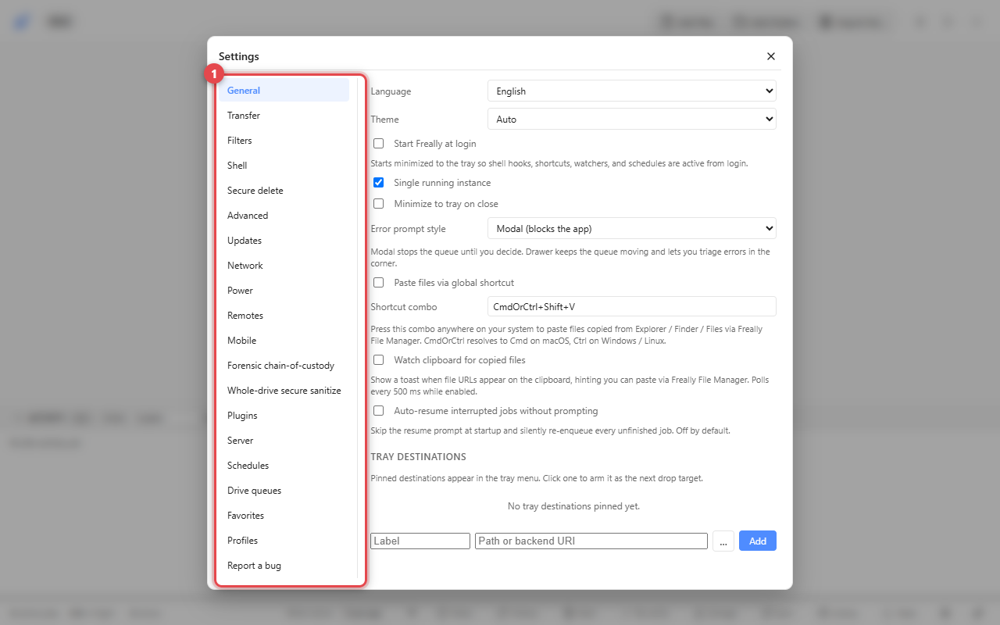
The tab rail runs down the left of the modal; it scrolls if the window is short.
All settings take effect immediately — no restart required. Changes hot-reload:
if you change the buffer size and then start a new job, that job uses the new value.
Close the Settings modal when done.
Keyboard shortcuts
These shortcuts work anywhere in the main window:
Shortcut
Action
Ctrl / Cmd + O
Add files
Ctrl / Cmd + Shift + O
Add folders
Space (row focused)
Pause or resume the focused job
Enter
Open the details drawer for the focused row
Home / End
Jump to the first or last row in the queue
Ctrl + ↑ / Ctrl + ↓
Move focused row to the top or bottom of the list
Shift + ↑ / Shift + ↓
Reorder rows one step up or down in the source list
Ctrl / Cmd + Shift + V
Paste files via Freally File Manager (global hotkey — works system-wide)
Esc
Close the topmost modal or details drawer
Tips & troubleshooting
"Path rejected — contains parent-directory (..) segments"
A relative path containing .. was passed to Freally File Manager. Retry the operation
from your file manager using the shell integration. If you believe the path was valid,
please
file an issue.
Copy stalls at 100%
Check the state pill in the header. If it shows Verifying, the
post-copy hash pass is running in the background — this is normal, especially for large
files or slower algorithms like SHA-256. Wait for it to finish, or disable verify in
Settings → Transfer if you don't need it.
Why is my copy slow?
While a transfer runs, the header shows a small bottleneck badge — a cause icon plus a
live throughput sparkline — whenever the speed drops below what the copy should be
sustaining. Hover it for the cause: source disk, destination disk, network, antivirus,
CPU, or thermal throttling. A saturated destination disk (📤) or a busy antivirus
scanner (🛡) are the usual culprits for a local copy.
"Low space on the destination" modal
Freally File Manager detected that the source files won't fit at the destination. Click
Pick which to copy… to open the subset picker, then uncheck items
until the size fits the available space.
Windows: "File in use" error
Freally File Manager opens source files with shared read access and retries automatically with
exponential backoff on sharing-violation errors. If the retry loop is exhausted, the
holding process is refusing all coexistence — close the application that has the file
open and try again.
Linux: AppImage won't launch
Run chmod +x freally-*.AppImage to make the file executable. On older
glibc systems, use the .deb or .rpm package instead — the
AppImage is built against Ubuntu 22.04's glibc.
History tab is empty
Check Settings → Advanced → Database path. The default locations are:
If the path has been changed to a location that doesn't exist, point it back to the
correct folder and restart the app.
"manifest url is malformed" when checking for updates, or "helper binary not found"
Both mean the copy you are running was built before those fixes landed. Download the
current 1.0.0 installer from the
releases page
and install it over the top — your settings and history are kept. The first message
affects Check for updates; the second affects anything needing
administrator rights, such as retrying a copy that was refused for permissions,
changing the right-click menu entries, or whole-drive secure erase.
See screenshotHide screenshot
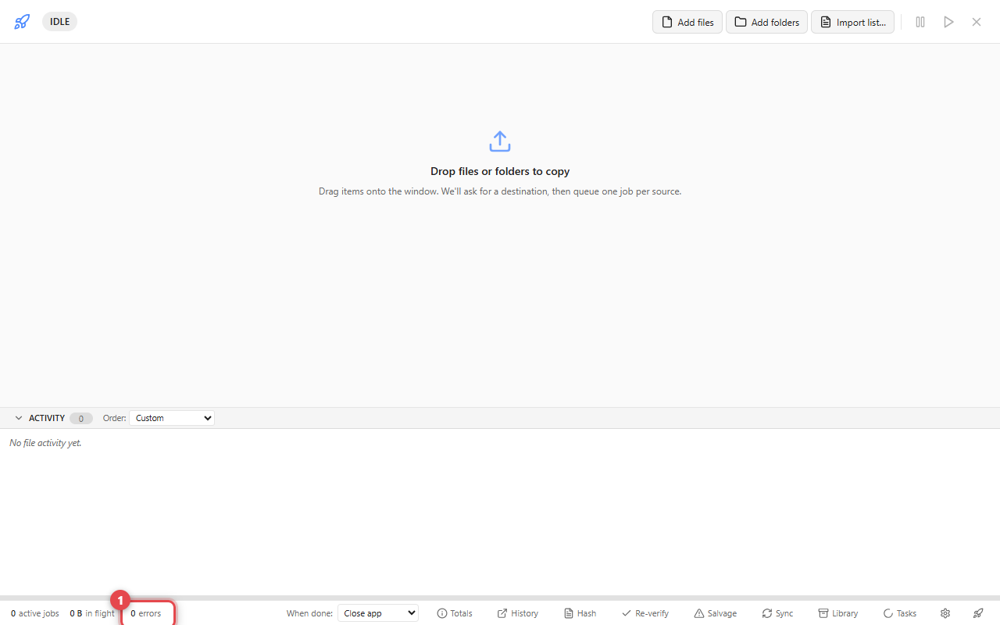
The error log keeps the full text of anything that failed, which is what to attach to a bug report.
Getting more help Open an issue on GitHub
with your OS version, Freally File Manager version, and the text of any error message.
See screenshotHide screenshot
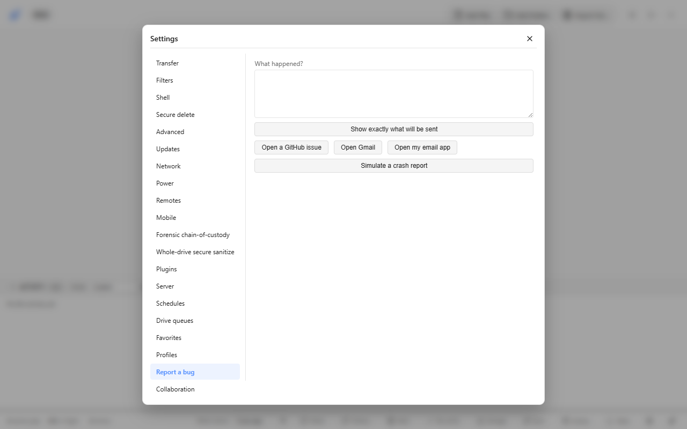
Settings → Report a bug fills in the version and OS for you, so the report has what a maintainer needs.
Privacy
No telemetry. Freally File Manager never phones home. The telemetry field in
settings is permanently disabled — it cannot be re-enabled by editing the settings file
because the field is marked #[serde(skip_deserializing)] in the source code.
No network calls during file operations. While copying, moving,
verifying, or securely deleting files, Freally File Manager makes zero network requests.
Update checks are opt-in. The launch update check can be turned off in
Settings → Updates. When enabled, it fetches only the update manifest — not your file
paths or any usage data — and is throttled to once every 24 hours.
Logs never contain file contents. Debug logs may include file paths and
hash values for diagnosing failures, but never include the contents of any file. Hash
sidecar exports use job-root-relative paths only.
See screenshotHide screenshot
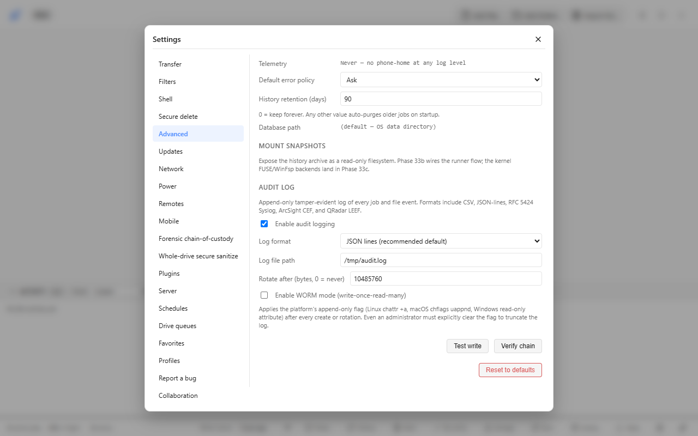
Log level, history retention and the database location all live on the Advanced pane — nothing here leaves the machine.